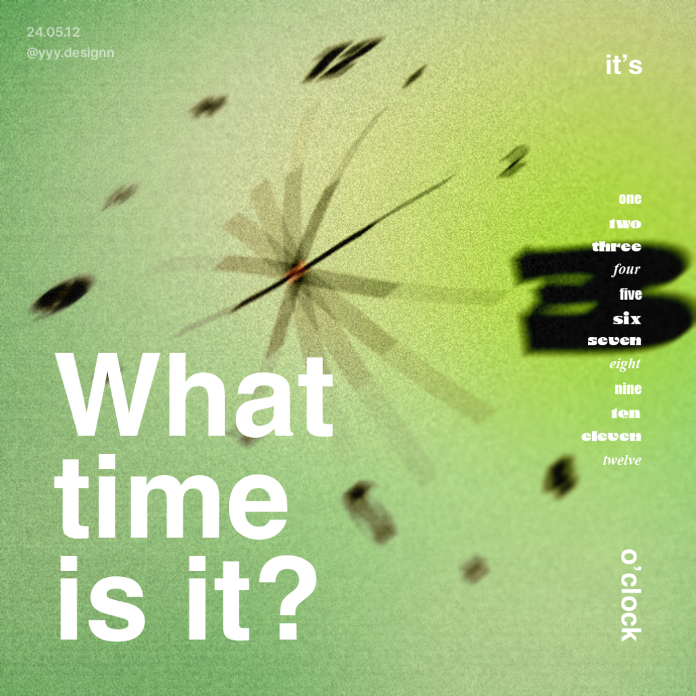
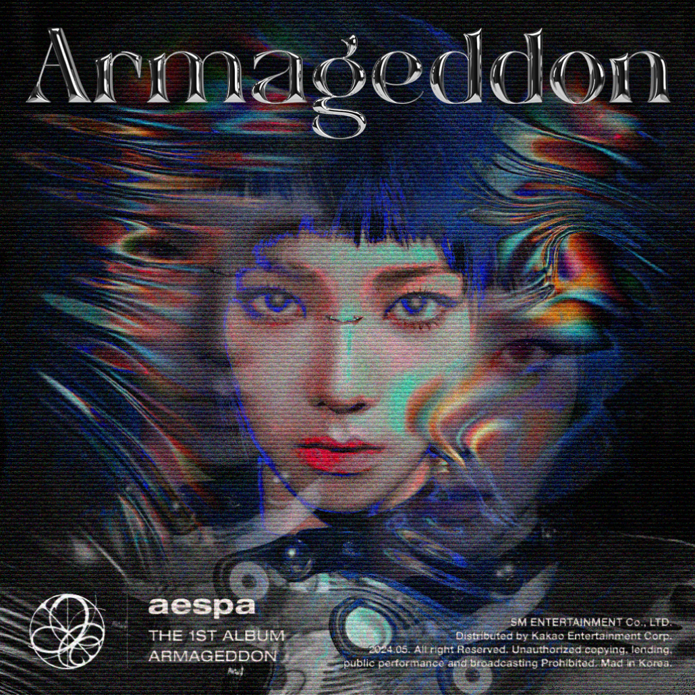

Works
-
KOVO
- UX/UI
- figma
- Responsive
- UX/UI
- figma
- Responsive
- 2024
KOVO
한국 배구연맹(KOVO) 웹사이트와 애플리케이션의 UI/UX 디자인 개선 작업물입니다. 주요 작업으로는 메인 화면을 비롯해 티켓 예매 서비스, 마이페이지 관리, 경매 서비스 등 KOVO에서 제공하는 다양한 서비스 화면을 전반적으로 개선하였습니다. 특히, 사용자 경험을 더욱 향상시키기 위해 디자인 시스템을 사용하여 직관적이고 일관성 있는 인터페이스를 구축하고, 실제 사용자 피드백을 반영하여 지속적으로 디벨롭해 나갔습니다. 이를 통해 KOVO가 제공하는 모든 서비스를 사용자들이 보다 편리하고 즐겁게 이용할 수 있도록 전반적인 UI/UX 환경을 개선하였습니다.
As is
- 원하는 정보를 한번에 찾기 어려움
- Web 환경만 지원
- 각 배구 구단의 정보 찾기 어려움
To be
- 최근 경기결과, 하이라이트, 순위 등을 제공
- 반응형 및 어플리케이션 개발로 접근성 강화
- 메인 페이지에서 자신의 응원 선수 노출
Color
- #2438EF
- #222222
- #555555
- #666666
- #999999
KOVO 메인 화면
- 메인 배너에서 최신 소식 확인 및 사용자의 응원 선수 프로필 확인가능
- 경기 일정과 진행 예정 경기 확인 가능
- 선수 랭킹 확인 가능
- 공식 유튜브와 마켓 등 콘텐츠 확인 가능
티켓 구매 서비스
- 경기일정을 확인하고 티켓 구매 가능
- 반응형 디자인 적용으로 접근성 강화
14개 구단 페이지 구축
- 디자인 가이드를 활용한 통일성 있으면서도 각 구단의 정체성을 드러낼 수 있는 14개 구단 페이지 구축
- 반응형 디자인 적용으로 접근성 강화
반응형 디자인
- 기존 Web 환경만 지원하는 방식에서 반응형 사이트로 개선
- App개발로 접근성 강화
-
K-Meta Village
- UX/UI
- figma
- Web/mobile
- UX/UI
- figma
- Web/mobile
- 2024
K-Meta Village
글로벌 메타버스 플랫폼을 활용해 해외 바이어와 이용자들을 대상으로 국내 메타버스, XR, 디지털 콘텐츠 관련 중소기업들의 제품과 서비스를 상시 홍보하는 사이트입니다. PC와 모바일 환경에 최적화하여 제작되었습니다.
Color
- #1F35FF
- #222222
- #555555
- #666666
- #999999
메인 화면
- 10개 기업의 소개 페이지로 통하는 아이콘을 각각의 행성으로 표현
- Web, Mobile 디바이스 지원
10개 기업 소개
- 각 기업별 소개 페이지 디자인
3D 전시관
- 3D 전시관을 활용하여 각 기업의 제품 소개
이벤트 페이지
- 이벤트 페이지 기획 및 디자인으로 유저의 참여도 증진
-
Design System
- UX/UI
- figma
- UX/UI
- figma
- 2024
Design System
프로젝트 전반에 일관성을 유지하고 개발 효율성을 높이기 위해 간단한 디자인 시스템을 구축했습니다. 이를 통해 팀 간 협업 속도를 개선하고 디자인의 품질을 한층 더 높일 수 있었습니다.
Foundation
Components
-
Pet Service
- UX/UI
- figma
- UX/UI
- figma
- App
- 2024
Pet Service
반려동물을 가족처럼 여기는 사람들이 점점 많아지면서, 강아지와 고양이를 위한 의료 서비스나 건강한 식품에 대한 관심도 함께 커지고 있습니다. 이에 따라, 반려동물의 건강 관리뿐만 아니라 생애 주기별로 필요한 정보들을 체계적으로 기록하고 정리할 수 있는 애플리케이션을 디자인하게 되었습니다. 이 앱은 보호자들이 반려동물의 성장 과정과 건강 상태를 쉽게 추적하고, 필요한 정보를 한눈에 확인할 수 있도록 돕는 것을 목표로 작업하였습니다.
Color
- #FFB801
- #222222
- #555555
- #666666
- #999999
메인 화면
- 반려동물의 간단한 정보 등록 및 확인 가능
- 반려동물의 기록 확인 가능
- 반려생활에 필요한 정보 확인 가능
- 다양한 상품 큐레이션 및 쇼핑
기능
- 반려동물 기록 시기별 아카이브
- 반려동물 사진 텍스트 기록 및 확인
- 산책 기록 및 실시간 위치 확인
- 사료 적정 급여량 확인 기능
-
Cosmetics
- Web
- Photoshop
- Web
- Photoshop
- 2023
Cosmetics
2030 여성을 위한 자연친화적인 화장품 브랜드 홈페이지를 가상으로 디자인하였습니다. 홈페이지 전체적으로 부드러운 톤의 사진과 색감을 사용하였으며 깔끔한 느낌을 주기 위해 고딕체를 사용하였습니다. 사용자들이 쉽게 정보를 탐색하고 얻을 수 있도록 직관적인 네비게이션과 레이아웃으로 구성했습니다.
Color
- #202020
- #555555
- #666666
- #999999
- #fffaf4
주요 기능
- 키 비주얼 이미지 롤링 기능
- 베스트 상품 및 신상품 큐레이션
- 스토어 연결
- 멤버십 가입 유도 및 선물하기
-
Graphic Design
- Adobe
- 2024
- Photoshop
- illustrator
- dimesion
- 2024
Graphic Design
Photoshop, illustrator, dimension 등을 사용한 그래픽 디자인입니다. 컨셉과 주제 모두 자유인 개인 작업물입니다.


- 


- 


About
저는 6년 차 UX/UI 디자이너 제예영입니다. 웹과 모바일 앱 디자인을 주로 하며, 사용자 경험을 최우선으로 생각하는 디자인을 추구해왔습니다. 또한, HTML, CSS, JavaScript 같은 프론트엔드 기술을 활용해 디자인뿐만 아니라 개발적인 측면에서도 이해도가 높습니다. 다양한 분야의 프로젝트에 참여해왔고, 특히 개발자와 기획자와의 원활한 커뮤니케이션을 통해 팀워크를 이루는 데 자신이 있습니다. 디자인과 개발의 경계를 넘나들며, 사용자와 비즈니스 모두를 만족시키는 솔루션을 제공하는 것이 제 목표입니다.
I'm Yeyeong Je, a UX/UI designer for 6 years. I mainly design web and mobile apps, and I have pursued design that puts user experience first. Also, I have a high understanding of design as well as development by utilizing front-end technologies such as HTML, CSS, and JavaScript. I have participated in projects in various fields, and I am especially confident in achieving teamwork through smooth communication between developers and planners. My goal is to provide solutions that satisfy both users and businesses, crossing the boundaries of design and development.
Skills
- Photoshop
- figma
- illustrator
- html
- css
- javascript
- WordPress
- Cafe24
- MS Office
- After Effects
- Final Cut Pro